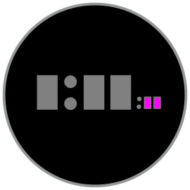

Watch Faces
Watch faces are a fun way to add personality to a Garmin wearable. Compared to other app types, watch faces are limited in scope — they don’t take input and don’t have a traditional UI flow — but they still require multiple considerations.
Color Use
Connect IQ apps use a lot of different screen technologies, and allows you to support all these technologies in a single app. When designing a watch face you may need to consider the appearance in eight colors, 64 colors or with AMOLED displays. Conversely, you can choose to only support the devices that use the technology that works best for your watch face. This will save in the design and implementation phases but constrain your audience.
Screen Size and Shape
Connect IQ wearables come with many different screen shapes, but the most common are round or square with 1:1 aspect ratio.
For devices with 1:1 aspect ratio, planning your watch face with relative coordinates can help you design for several devices at once.
Custom Fonts
Custom fonts liven up watch faces. Due to the variety of resolutions, your design should specify a point size to use for every resolution.
Low- and High-Power Modes
Connect IQ watch faces typically operate in a low-power state where the system requests updates every minute. When the user gestures to look at the watch, the system will request the watch face enter a high-power state. During this period, typically 10 seconds, the watch face can enable timers and play animations. Use this time to add some action to your watch faces.
Always Active
MIP watch faces by default update once a minute. High-power mode does allow drawing seconds or a second hand for a period of time, but sometimes the user wants that kind of information available the moment their eyes focus on the watch.
Always-active watch faces can perform a partial update of the screen every second. The update must operate under a 20 millisecond time frame, which does not allow updating the whole screen but can allow for an update on a small portion. For example, the seconds area of this watch face (highlighted in pink) could be updated once a second:
Always On (AMOLED)
Devices with AMOLED displays typically disable the display when not in use to save power, but they do allow the user to enable an always-on mode. Because long-term display use affects the battery life and can wear down the display, Connect IQ has special rules for AMOLED always-on mode. When the watch face enters always-on mode, the watch face will only update every minute, and each update is limited to using 10% of the available pixels of the display. In addition, a burn-in prevention mechanism will further guide the use of the display on some devices.
Many AMOLED devices have a setting to disable the gesture that returns the watch face to high power mode to save power. To avoid a poor user experience, it is expected that Connect IQ watch faces for AMOLED devices support always-on mode to keep and watch face visible in these cases.
Settings
Watch faces can be configured using either mobile settings or on-device settings. Mobile settings let the user modify a set of app properties. Your app will be notified when they change.
On System 4 and above devices, Connect IQ watch faces can have a launchable configuration flow built into the watch face. Watch face configuration is available to the user in the system Watch Face menu, using the same configuration mechanism as native watch faces. From within the settings flow, you can push and pop views to enable configuration.
Best Practices
Garmin users love data. The best watch faces offer a level of customization that allows users to see pertinent information with a pleasing design aesthetic.
Not all designs can scale to all devices. Before you begin, choose the most important devices to support, and create your design based on their capabilities. This may require two or three designs if you are attempting a watch face that supports eight-color displays, 64-color displays and AMOLED or LCD displays.
Users enjoy enabling always-on mode on AMOLED devices. If you support AMOLED devices, always incorporate an always-on mode into your watch face design. Here are some guidelines for adapting a watch face for always on:
Avoid using much white or blue. Consider using light gray instead.
Use fonts with thin line weights.
Minimize the use of static elements that never move (e.g., the center post of analog watch hands).
If you do have static elements, consider moving elements up to four pixels in any direction every minute while in always-on mode.